Skip to content
Skip to content
What Is Deep Learning?
3 things you need to know
Deep learning is a machine learning technique that teaches computers to do what comes naturally to humans: learn by example. Deep learning is a key technology behind driverless cars, enabling them to recognize a stop sign, or to distinguish a pedestrian from a lamppost. It is the key to voice control in consumer devices like phones, tablets, TVs, and hands-free speakers. Deep learning is getting lots of attention lately and for good reason. It’s achieving results that were not possible before.
In deep learning, a computer model learns to perform classification tasks directly from images, text, or sound. Deep learning models can achieve state-of-the-art accuracy, sometimes exceeding human-level performance. Models are trained by using a large set of labeled data and neural network architectures that contain many layers.
How does deep learning attain such impressive results?
In a word, accuracy. Deep learning achieves recognition accuracy at higher levels than ever before. This helps consumer electronics meet user expectations, and it is crucial for safety-critical applications like driverless cars. Recent advances in deep learning have improved to the point where deep learning outperforms humans in some tasks like classifying objects in images.
While deep learning was first theorized in the 1980s, there are two main reasons it has only recently become useful:
- Deep learning requires large amounts of labeled data. For example, driverless car development requires millions of images and thousands of hours of video.
- Deep learning requires substantial computing power. High-performance GPUs have a parallel architecture that is efficient for deep learning. When combined with clusters or cloud computing, this enables development teams to reduce training time for a deep learning network from weeks to hours or less.
Examples of Deep Learning at Work
Deep learning applications are used in industries from automated driving to medical devices.
Automated Driving: Automotive researchers are using deep learning to automatically detect objects such as stop signs and traffic lights. In addition, deep learning is used to detect pedestrians, which helps decrease accidents.
Aerospace and Defense: Deep learning is used to identify objects from satellites that locate areas of interest, and identify safe or unsafe zones for troops.
Medical Research: Cancer researchers are using deep learning to automatically detect cancer cells. Teams at UCLA built an advanced microscope that yields a high-dimensional data set used to train a deep learning application to accurately identify cancer cells.
Industrial Automation: Deep learning is helping to improve worker safety around heavy machinery by automatically detecting when people or objects are within an unsafe distance of machines.
Electronics: Deep learning is being used in automated hearing and speech translation. For example, home assistance devices that respond to your voice and know your preferences are powered by deep learning applications.
How Deep Learning Works
Most deep learning methods use neural network architectures, which is why deep learning models are often referred to as deep neural networks.
The term “deep” usually refers to the number of hidden layers in the neural network. Traditional neural networks only contain 2-3 hidden layers, while deep networks can have as many as 150.
Deep learning models are trained by using large sets of labeled data and neural network architectures that learn features directly from the data without the need for manual feature extraction.

 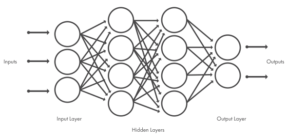
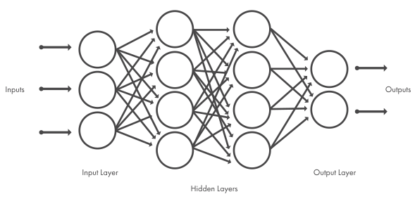Figure 1: Neural networks, which are organized in layers consisting of a set of interconnected nodes. Networks can have tens or hundreds of hidden layers.
One of the most popular types of deep neural networks is known as convolutional neural networks (CNN or ConvNet). A CNN convolves learned features with input data, and uses 2D convolutional layers, making this architecture well suited to processing 2D data, such as images.
CNNs eliminate the need for manual feature extraction, so you do not need to identify features used to classify images. The CNN works by extracting features directly from images. The relevant features are not pretrained; they are learned while the network trains on a collection of images. This automated feature extraction makes deep learning models highly accurate for computer vision tasks such as object classification.
 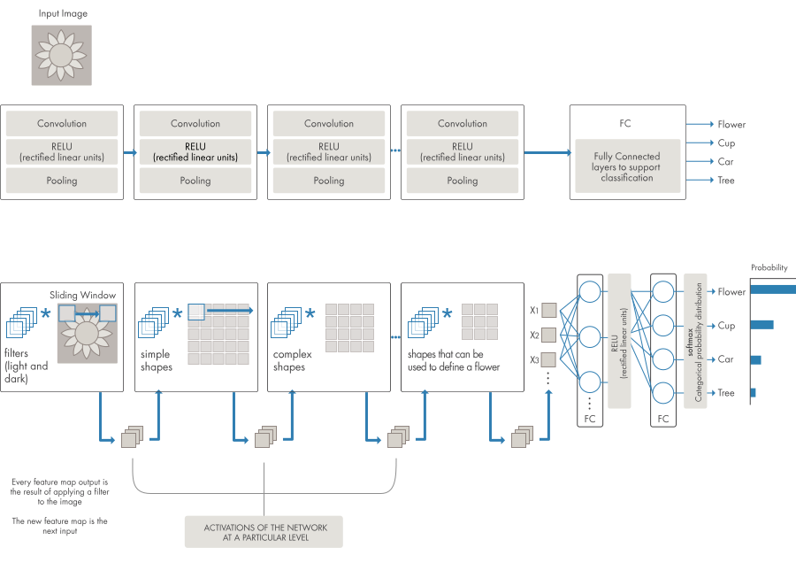
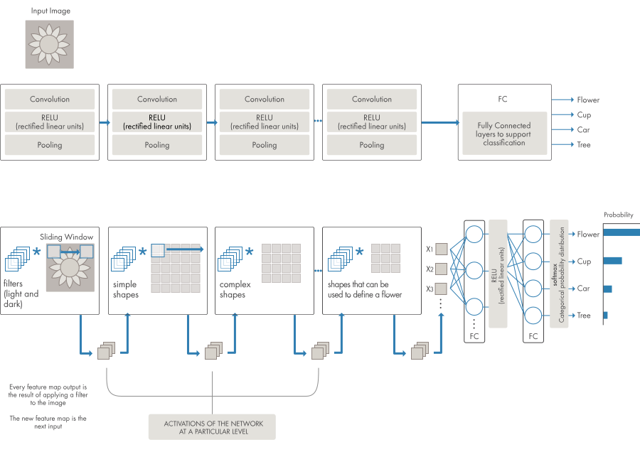Figure 2: Example of a network with many convolutional layers. Filters are applied to each training image at different resolutions, and the output of each convolved image serves as the input to the next layer.
CNNs learn to detect different features of an image using tens or hundreds of hidden layers. Every hidden layer increases the complexity of the learned image features. For example, the first hidden layer could learn how to detect edges, and the last learns how to detect more complex shapes specifically catered to the shape of the object we are trying to recognize.
What's the Difference Between Machine Learning and Deep Learning?
Deep learning is a specialized form of machine learning. A machine learning workflow starts with relevant features being manually extracted from images. The features are then used to create a model that categorizes the objects in the image. With a deep learning workflow, relevant features are automatically extracted from images. In addition, deep learning performs “end-to-end learning” – where a network is given raw data and a task to perform, such as classification, and it learns how to do this automatically.
Another key difference is deep learning algorithms scale with data, whereas shallow learning converges. Shallow learning refers to machine learning methods that plateau at a certain level of performance when you add more examples and training data to the network.
A key advantage of deep learning networks is that they often continue to improve as the size of your data increases.
 with deep learning (right).") 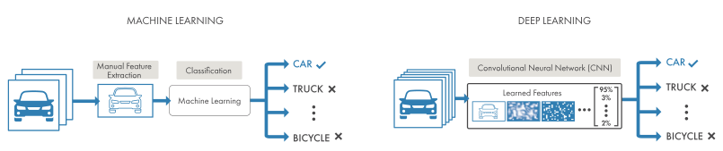
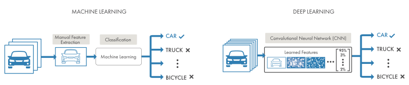Figure 3. Comparing a machine learning approach to categorizing vehicles (left) with deep learning (right).
In machine learning, you manually choose features and a classifier
to sort images. With deep learning, feature extraction and modeling
steps are automatic.
Choosing Between Machine Learning and Deep Learning
Machine learning offers a variety of techniques and models you can choose based on your application, the size of data you're processing, and the type of problem you want to solve. A successful deep learning application requires a very large amount of data (thousands of images) to train the model, as well as GPUs, or graphics processing units, to rapidly process your data.
When choosing between machine learning and deep learning, consider whether you have a high-performance GPU and lots of labeled data. If you don’t have either of those things, it may make more sense to use machine learning instead of deep learning. Deep learning is generally more complex, so you’ll need at least a few thousand images to get reliable results. Having a high-performance GPU means the model will take less time to analyze all those images.
How to Create and Train Deep Learning Models
The three most common ways people use deep learning to perform object classification are:
Training from Scratch
To train a deep network from scratch, you gather a very large labeled data set and design a network architecture that will learn the features and model. This is good for new applications, or applications that will have a large number of output categories. This is a less common approach because with the large amount of data and rate of learning, these networks typically take days or weeks to train.
Transfer Learning
Most deep learning applications use the transfer learning approach, a process that involves fine-tuning a pretrained model. You start with an existing network, such as AlexNet or GoogLeNet, and feed in new data containing previously unknown classes. After making some tweaks to the network, you can now perform a new task, such as categorizing only dogs or cats instead of 1000 different objects. This also has the advantage of needing much less data (processing thousands of images, rather than millions), so computation time drops to minutes or hours.
Transfer learning requires an interface to the internals of the pre-existing network, so it can be surgically modified and enhanced for the new task. MATLAB® has tools and functions designed to help you do transfer learning.
Feature Extraction
A slightly less common, more specialized approach to deep learning is to use the network as a feature extractor. Since all the layers are tasked with learning certain features from images, we can pull these features out of the network at any time during the training process. These features can then be used as input to a machine learning model such as support vector machines (SVM).
Accelerating Deep Learning Models with GPUs
Training a deep learning model can take a long time, from days to weeks. Using GPU acceleration can speed up the process significantly. Using MATLAB with a GPU reduces the time required to train a network and can cut the training time for an image classification problem from days down to hours. In training deep learning models, MATLAB uses GPUs (when available) without requiring you to understand how to program GPUs explicitly.
 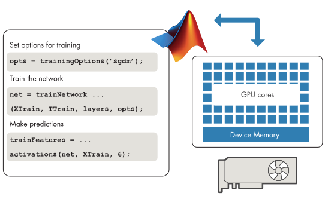
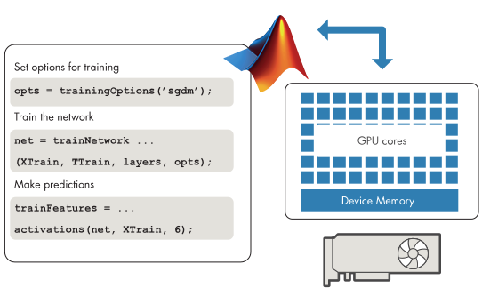Figure 4. Deep Learning Toolbox commands for training your own CNN from scratch or using a pretrained model for transfer learning.
Deep Learning Applications
Pretrained deep neural network models can be used to quickly apply deep learning to your problems by performing transfer learning or feature extraction. For MATLAB users, some available models include AlexNet, VGG-16, and VGG-19, as well as Caffe models (for example, from Caffe Model Zoo) imported using importCaffeNetwork.
 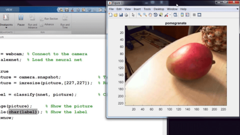
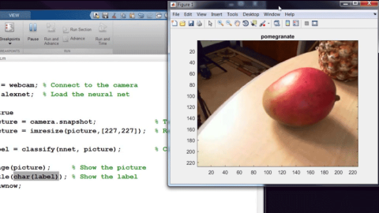Use AlexNet to Recognize Objects with Your Webcam
Use MATLAB, a simple webcam, and a deep neural network to identify objects in your surroundings.
 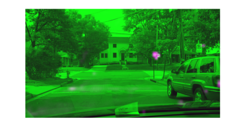
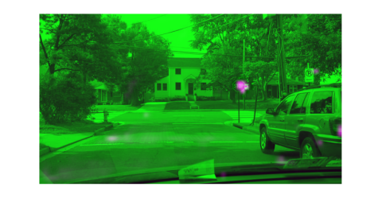Example: Object Detection Using Deep Learning
In addition to object recognition, which identifies a specific object in an image or video, deep learning can also be used for object detection. Object detection algorithms like YOLO can recognize and locate the object in a scene, and can locate multiple objects within the image.
MATLAB makes deep learning easy. With tools and functions for managing large data sets, MATLAB also offers specialized toolboxes for working with machine learning, neural networks, computer vision, and automated driving.
With just a few lines of code, MATLAB lets you do deep learning without being an expert. Get started quickly, create and visualize models, and deploy models to servers and embedded devices.
Teams are successful using MATLAB for deep learning because it lets you:
- Create and Visualize Models with Just a Few Lines of Code.
- Perform Deep Learning Without Being an Expert.
- Automate Ground Truth Labeling of Images and Video.
- Integrate Deep Learning in a Single Workflow.
MATLAB lets you build deep learning models with minimal code. With MATLAB, you can quickly import pretrained models and visualize and debug intermediate results as you adjust training parameters.
You can use MATLAB to learn and gain expertise in the area of deep learning. Most of us have never taken a course in deep learning. We have to learn on the job. MATLAB makes learning about this field practical and accessible. In addition, MATLAB enables domain experts to do deep learning – instead of handing the task over to data scientists who may not know your industry or application.
MATLAB enables users to interactively label objects within images and can automate ground truth labeling within videos for training and testing deep learning models. This interactive and automated approach can lead to better results in less time.
MATLAB can unify multiple domains in a single workflow. With MATLAB, you can do your thinking and programming in one environment. It offers tools and functions for deep learning, and also for a range of domains that feed into deep learning algorithms, such as signal processing, computer vision, and data analytics.
With MATLAB, you can integrate results into your existing applications. MATLAB automates deploying your deep learning models on enterprise systems, clusters, clouds, and embedded devices.
See more deep learning features and get example code.
Related products: MATLAB, Computer Vision Toolbox™, Statistics and Machine Learning Toolbox™, Deep Learning Toolbox™, and Automated Driving Toolbox™.


 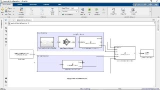
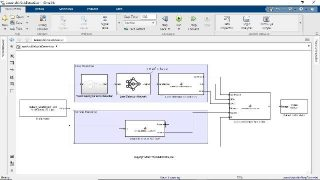